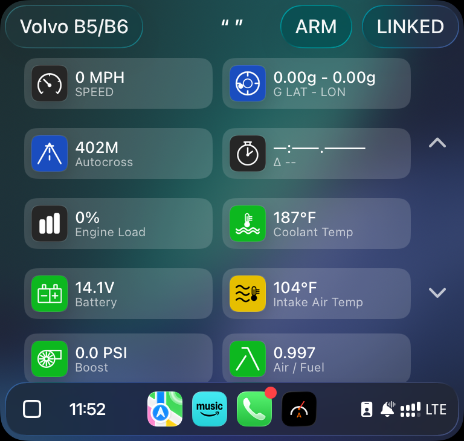
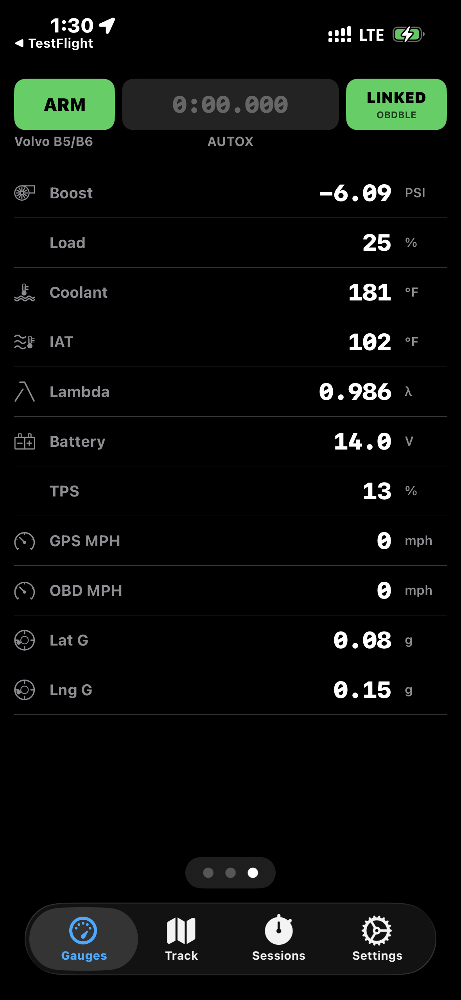

What's New
Recent improvements to ApexLogger, rolling out to TestFlight testers now.
CarPlay layout, connection reliability, Volvo B5/B6 accuracy, and voice alerts
Apple CarPlay
Layout now adapts automatically to your engine profile
The CarPlay gauge rows are built from your selected vehicle's actual sensor support — no more empty or irrelevant rows for gauges your engine doesn't have. Add a sensor to your profile and it appears on the dash automatically.
ApexLogger's own icon set, now on the CarPlay dash
CarPlay gauges use the same custom icon set as the in-app screens instead of generic system glyphs, and icons now render at the correct resolution for your car's display — sharper on larger center screens.

OBD-II Connectivity
More reliable Bluetooth adapter connections
Reworked how ApexLogger tracks connection state end-to-end, fixing cases where the app reported "connected" without live data, and cleaning up handling of budget OBD adapters that were mis-binding to the wrong Bluetooth service.
Disconnect, reconnect, and adapter diagnostics
Tap the connection status pill to disconnect, reconnect, switch adapters, or view live diagnostics — including adapter chip identity and Bluetooth service/characteristic info for troubleshooting flaky interfaces.
OBD Simulator mode
No adapter handy? Connect the built-in simulator to preview every gauge screen and CarPlay layout for your vehicle profile with all values at zero — no physical hardware required.
Volvo B5/B6
Engine Load replaces Oil Temp
The B5/B6's ECU doesn't expose an oil temperature PID, so that gauge is replaced with live Calculated Engine Load for this platform.

Boost pressure now corrected for real-time air pressure
Boost readings account for your current local barometric pressure rather than assuming sea-level conditions, so gauge PSI stays accurate at altitude and in changing weather.
Factory overboost recognized, not flagged as a fault
The B5/B6's ECU briefly allows boost above its steady-state max under hard acceleration. ApexLogger now holds the overboost alert for a short grace window while you're on the throttle, instead of firing a false alarm during normal, expected engine behavior.
Voice Alerts
Music resumes after spoken alerts
CarPlay and Bluetooth audio now properly resumes after ApexLogger speaks a threshold alert or run announcement, instead of staying paused.
"PSI" pronounced correctly
Spoken alerts now read "PSI" as individual letters instead of mispronouncing it as a word.
More screenshots on the way for the connectivity and voice alert updates above.